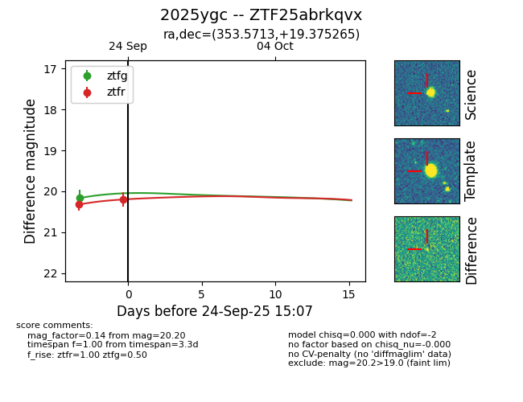
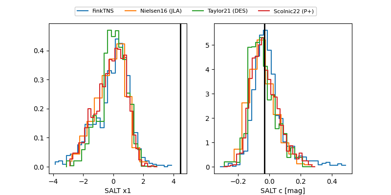

FINK: ZTF25abrkqvx
Lasair: ZTF25abrkqvx
ALeRCE: ZTF25abrkqvx
TNS: 2025ygc
YSE: 2025ygc
ZTF25abrkqvx (ztf,fink)
2025ygc (tns,yse)
equatorial (ra, dec) = (353.5713,+19.37526)
galactic (l, b) = (98.9738,-39.88014)


last ztfg=20.17, ztfr=20.20
1 ztfg, 2 ztfr detections